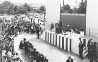
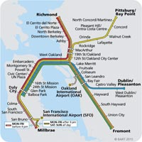

Construction of the BART (Bay Area Rapid Transit) officially began on June 19th, 1964, with President Lyndon Johnson presiding over the ground-breaking ceremonies for the 4.4. mile Diablo test track between Concord and Walnut Creek in Contra Costa County. The test track was used to develop and evaluate sophisticated new design concepts for BART's transit car and automatic train control system. Construction began on the Oakland subway in January, 1966. Construction on the tunnel through the Berkeley Hills completed in February, 1967. This was followed by the beginning of work on Market Street subway in July.
Today, The BART (Bay Area Rapid Transit) connects the San Francisco Peninsula with Oakland, Berkeley, Fremont, Walnut Creek, Dublin/Pleasanton and other cities in the Bay Area. For more than 40 years BART has provided fast, reliable transportation to downtown offices, shopping centers, tourist attractions, entertainment venues, universities and other destinations for Bay Area residents and visitors alike. Over 400,000 people currently ride BART daily. The most populated station in the system is the Embarcadero station (41,000 daily riders in 2013). The least populated station in the system was North Concord/Martinez (Less than 2,500 daily riders in 2013).